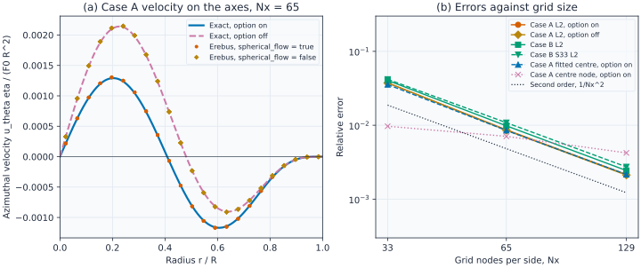
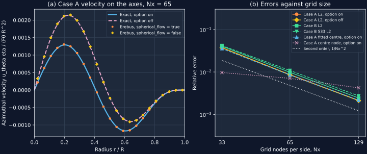

Spherical Momentum
What this page checks
This page checks how Erebus.jl computes the flow of the solid rock with the option geometry.spherical_flow = true. With this option, the 2-D grid stands for a slice through a sphere and not for a flat slab. Flow in a sphere differs from flow in a slab, so the code adds extra terms to the momentum equation: the metric terms. Validation here means that we run the code on a case where another source gives the right answer. The test then checks that the code gives that answer. If the metric terms were wrong, the flow inside a planetesimal and the stresses that break its rock would be wrong.
The page checks 3 groups of metric terms. Each group changes the flow by an amount of order 1, so a fault in any of them shows in the result.
- The weights on the stress, which act on every flow that shears (case A).
- The out-of-plane stress $S_{33}$ and its hoop term, which act only on a flow that moves towards or away from the centre (case B).
- The stress update that stores $S_{33}$ in
grids.S33after the solve (case B).
Each case below says why the check exists, what it tests, how we know the right answer and why it matters. The box "Test details" at the end of each case gives the reference, the tolerance, the test ids and the command.
How the option enters the momentum equation. The momentum equation says that the forces on each piece of rock balance: the stress, the pressure and the body force. With the option on, the momentum rows solve
\[\frac{1}{w} \partial_j (w \tau_{ij}) - \tau_{33} \frac{\partial_i w}{w} - \partial_i P_t + f_i = 0, \qquad i, j \in \{x, y\}, \qquad w = 2r.\]
Here $\tau_{ij}$ is the deviatoric stress, $P_t$ the total pressure, $f_i = \rho g_i$ the body force and $r$ the distance from the centre of the sphere. The weight $w$ in the first term makes the stress balance that of a sphere. The second term is the hoop term: the out-of-plane stress $\tau_{33}$ acts on the rock where $w$ changes. With the option off, the rows solve the 2-D equation $\partial_j \tau^\mathrm{2D}_{ij} - \partial_i P_t + f_i = 0$.
The equation in full and where the code adds each term
The stress is the 3-D deviatoric stress $\tau_{ij} = 2 \eta (\dot\varepsilon_{ij} - \delta_{ij} \nabla_3 \cdot \mathbf{u} / 3)$, with the viscosity $\eta$, the strain rate $\dot\varepsilon_{ij}$ and the out-of-plane strain rate $\dot\varepsilon_{33} = \mathbf{u} \cdot \nabla w / w$. The equation is the momentum equation of the spherical annulus of Hernlund and Tackley (2008), their Eqs. (2) to (7) with $d = 2$ and the bulk viscosity $k_0 = 0$, written in Cartesian components (see Discretization and Numerics). Their Eq. (2) has a radial gravity only and their Eq. (3) no body force; the force $f_i$ here takes the place of the general body force $\rho g^i$ of their Eq. (14).
With the option off, the stress is the 2-D deviatoric stress $\tau^\mathrm{2D}_{xx} = -\tau^\mathrm{2D}_{yy} = S_{xx} = \eta (\dot\varepsilon_{xx} - \dot\varepsilon_{yy})$ and $\tau^\mathrm{2D}_{xy} = 2 \eta \dot\varepsilon_{xy}$, with the trace $\nabla_2 \cdot \mathbf{u} / 2$ in place of $\nabla_3 \cdot \mathbf{u} / 3$.
The 2-D rows hold the 2-D terms. The function _add_spherical_momentum! in src/numerics/stokes_darcy.jl adds the difference, and both assembly paths of the solver call it. It does 4 steps, with the face multipliers $m_F = w_F / w_P$ of each cell face $F$ around a pressure node $P$:
- It computes $\dot\varepsilon_{33}$ at a pressure node as the weighted divergence of the continuity row minus the 2-D divergence.
- It computes $S_{33} = \tau_{33} = \frac{2\eta}{3} (2 \dot\varepsilon_{33} - \dot\varepsilon_{xx} - \dot\varepsilon_{yy})$.
- It adds $(m_F - 1)$ times the stress flux through each face, which is the difference between $\frac{1}{w} \partial_j (w \tau_{ij})$ and $\partial_j \tau_{ij}$.
- It adds the $S_{33}$ part of the weighted divergence, with $\tau_{xx} = S_{xx} - S_{33} / 2$ and $\tau_{yy} = -S_{xx} - S_{33} / 2$, and the hoop term $\tau_{33} \partial_i w / w$, with $\partial_x w / w = (m_E - m_W) / \Delta x$ and $\partial_y w / w = (m_S - m_N) / \Delta y$.
After the solve, _spherical_stress_update! in src/numerics/plasticity.jl writes grids.S33 from the solved velocity.
The test set-up. Both cases use the same set-up.
- A sphere of radius $R = 50$ km sits in the middle of a square box of 140 km.
Nxis the number of grid nodes on each side of the box. It is odd, so a grid node lies on the centre.- The viscosity is $\eta = 10^{20}$ Pa s in the whole box, with no air layer.
- The rock is nearly incompressible: the shear viscosity is $10^{-6}$ times the compaction viscosity $\zeta$.
- The shear modulus is $10^{35}$ Pa, so elasticity does not change the viscosity, and the stress history is 0.
- The fluid density is 0, and the case sets the body force $f = \rho g$ directly in the gravity fields
gxandgy. - The total pressure is held at $P_\mathrm{amb} = 100$ Pa on the box edge.
- Every exact flow is 0 outside the sphere ($r \ge R$), so the walls of the box see the exact solution.
The case builds the state with init_simulation, sets the grid fields directly and calls solve_stokes_darcy! once, on timestep 1. With the force scale $F_0 = 100$ N/m³, the velocity unit of case A is $F_0 R^2 / \eta = 2.5 \times 10^{-9}$ m/s. The largest velocity of case A is a few $10^{-12}$ m/s.
The 6 conditions that the test asserts
The exact solutions and the solve rest on 6 conditions. Each condition is a test assertion, so a change of the set-up that breaks one fails the test.
- C1, nearly incompressible rock: after the solve, on every interior pressure node, $\eta / \zeta \le 10^{-6}$. The exact flows have $\nabla_3 \cdot \mathbf{u} = 0$ and $P_t = P_f = P_\mathrm{amb}$, so they solve the continuum equations for any $\zeta > 0$. C1 makes the solve a nearly incompressible Stokes problem.
- C2, viscous limit: on every basic node and every pressure node, the shear modulus times $\Delta t$ is at least $10^6$ times the viscosity.
- C3, body force: the solve leaves
gxandgyunchanged. - C4, force moments: the moments $\int s^2 f_\theta$ and $\int s^3 f_\theta$ of the case A force are 0 in exact rational arithmetic.
- C5, compact flow: the exact velocity of every case is 0 on $r = R$, checked in rational arithmetic at rational points of the circle and to round-off in Float64.
- C6, one solve: the time step after the solve equals $\Delta t$ to a relative $10^{-12}$, with one plastic pass that converges.
Case A: shear flow around the centre, with and without the option
Why this check exists. The weights on the stress, the factors $(m_F - 1)$, could be missing, have the wrong sign or use the weight of the wrong cell face. In a flow around the centre, these weights change the balance of the shear stress by an amount of order 1. So each of these faults changes the flow.
What it tests. A body force $f_\theta$ pushes the rock around the centre. It drives the flow $\mathbf{u} = r \Omega(r) \mathbf{e}_\theta$, where $\Omega$ is the rotation rate and changes with $r$. The force is $f_\theta = F_0 \rho (1 - \rho^2)^2 (1 - 32 \rho^2 / 5 + 39 \rho^4 / 5)$, where $\rho = r / R$ is the scaled radius (not the density). The test runs the case with the option on and with the option off, at Nx = 33, 65 and 129. It measures 4 things:
- the L2 error of the velocity, which is the relative error over all interior velocity nodes of the box, with equal weights;
- the rotation rate at the centre, from a fit and at the centre node;
- the ratio of the L2 norms of the velocity profiles with and without the option;
- the difference between the 2 solver paths (6 and 4 variables), which must give the same fields.
How we know the right answer. For this flow, the momentum equation has an exact solution with the option on and another exact solution with the option off. The flow does not compress the rock, so $\tau_{33} = 0$, the pressure is uniform and the only stress is the shear stress $\tau_{r\theta} = \eta r \Omega'$. With the option on, the equation of Hernlund and Tackley (2008) then becomes
\[\frac{1}{r^3} \frac{d}{dr} \left( r^3 \tau_{r\theta} \right) + f_\theta = 0.\]
With the option off, it becomes $\frac{1}{r^2} \frac{d}{dr} (r^2 \tau_{r\theta}) + f_\theta = 0$, which is the equation of a cylinder. The exact solutions are
\[\Omega_\mathrm{on} = \frac{F_0 R}{\eta} \frac{(1 - \rho^2)^4 (1 - 6 \rho^2)}{100}, \qquad \Omega_\mathrm{off} = \frac{F_0 R}{\eta} \frac{(1 - \rho^2)^4 (3 - 13 \rho^2)}{200}.\]
The force makes the flow 0 at $r = R$ and outside the sphere, with the option on and off. The test checks both formulas against their equation in exact rational arithmetic.
How the exact solution follows, and why it is also a flow of the full sphere
Hernlund and Tackley (2008) give the angular part of the momentum equation of the annulus as their Eq. (3), which has no body force. We add an azimuthal body force $f_\theta$ as in their Eq. (14), with $\partial_\phi = 0$ and $v_r = 0$. The equation then reduces to the form above with $d = 2$ (the sphere, option on), and to the cylinder form with $d = 1$ (the 2-D equation of the option off for this flow). The force has $\int_0^R s^2 f_\theta \, ds = \int_0^R s^3 f_\theta \, ds = 0$, so $\Omega' = 0$ at $r = R$ in both forms and the flow is 0 outside. The test checks both formulas against their equation and the 2 moments of the force with exact rational arithmetic, and the Float64 formulas against finite differences.
The option-on equation is also the equation of the full 3-D sphere for this flow. The 3-D flow $\mathbf{u} = \Omega(r) \, r \sin\vartheta \, \mathbf{e}_\varphi$, with the polar angle $\vartheta$ and the force $f_\varphi = \sin\vartheta \, f_\theta(r)$, has only 1 stress component, $\tau_{r\varphi} = \eta \, r \sin\vartheta \, \Omega'(r)$, because $\tau_{\vartheta\varphi} = \eta \sin\vartheta \, \partial_\vartheta \Omega = 0$. The $\varphi$ component of the stress divergence in spherical coordinates is then $\frac{1}{r^3} \partial_r (r^3 \tau_{r\varphi})$, and the factor $\sin\vartheta$ cancels against that of the force. So every latitude of the 3-D flow, the equator included, satisfies the option-on equation, and case A tests the slice against a flow of the full sphere.
Why it matters. Every run with spherical_flow = true uses the weights on the stress in each momentum row.


How to read the plot. Panel (a) shows the velocity of case A against the scaled radius $r / R$ at Nx = 65, on the 2 axes through the centre. On these axes the flow is purely azimuthal. The solid line is the exact solution with the option on, and the dashed line is the exact solution with the option off. The points are the values of the code at the grid nodes. A pass means that the points with the option on lie on the solid line. The points with the option off must lie on the dashed line. Panel (b) shows the errors against Nx on logarithmic axes, with a dotted line of second order. A pass means that the errors fall along the dotted line, except the error at the centre node (see the known limit below).
Known limit. With the option on, the error of the rotation rate at the centre node falls slowly when the grid gets finer. It falls at order 0.45 from Nx = 33 to 65 and at order 0.74 from 65 to 129 (the record rows centre_node_a_on). Without the option, it falls at second order. The record therefore holds this error only as an upper bound, with no order and no ratio row. The cause is the weight $w = 2r$, which has a sharp point (a cone) at the centre. The error stays near the centre: the L2 error over the box and the fitted rotation rate at the centre both converge at second order.
The rotation rate at the centre, and why the centre node converges slowly
The rotation rate at the centre is 1/100 with the option on and 3/200 without, in units of $F_0 R / \eta$, so the exact ratio is 2/3. We measure it in 2 ways. The fit takes $\Omega = v_\theta / r$ at the velocity nodes on the 2 axes through the centre with $0.18 \le \rho \le 0.85$, and fits a polynomial of degree 5 in $\rho^2$ by least squares. The exact $\Omega$ has degree 5 in $\rho^2$, so the fit has no bias. The fitted centre value converges at order 2.06 from Nx = 33 to 65 with the option on and off, and the ratio of the fitted values is 2/3 within 0.08 % at Nx = 65. The centre node value is half the vorticity at the basic node on the centre.
Within a few cells of the centre, the truncation error of the weighted divergence does not fall with the grid spacing, as the docstring of flow_metric_face_weights states. A flow with $\Omega(0) \ne 0$ is a rigid rotation near the centre, which has no strain in the continuum. On the grid, this rotation has the out-of-plane strain rate $\dot\varepsilon_{33} = \pm 0.011 \, \Omega$ at the 8 pressure nodes at $r = \sqrt{2.5} \, \Delta x \approx 1.58 \Delta x$, the same on every grid. Away from the centre, this strain rate falls at second order. Its sign changes from one of these nodes to the next around the centre, as $\sin 4\theta$ does, so the 8 values sum to 0. The continuity rows and the momentum rows use this discrete $\dot\varepsilon_{33}$ in the solve, and the stress update uses the same discrete $\dot\varepsilon_{33}$ when it writes $S_{33}$ into grids.S33 after the solve. With the option on, case A has a total pressure error of about 1100 Pa next to the centre that does not fall with the grid, against a stress scale $F_0 R = 5 \times 10^6$ Pa.
Case A0 shows the cause. It has $\Omega = -\frac{F_0 R}{\eta} \frac{\rho^2 (1 - \rho^2)^4}{10}$ with the force $f_\theta = F_0 \rho (1 - \rho^2)^2 (1 - 46 \rho^2 / 5 + 13 \rho^4)$ of the option-on equation, so $\Omega(0) = 0$. The test checks its formula in the same way as case A. Case A0 converges at second order in the L2 error, in the largest velocity error and in the largest pressure error. Case A0 runs in the test only, at Nx = 33 and 65, and has no record row.
Test details
- Reference: the exact solutions of case A with and without the option; the exact centre rotation ratio 2/3; the exact ratio of the profile L2 norms, $\sqrt{\int_0^1 \rho \, u_\mathrm{on}^2 \, d\rho / \int_0^1 \rho \, u_\mathrm{off}^2 \, d\rho} = \sqrt{8 / 11} \approx 0.853$ from the formulas in rational arithmetic, compared with the discrete ratio over the velocity nodes with $r < R$; equal fields of the 6-variable and the 4-variable solver paths.
- Tolerance:
- each error: at most about 1.4 times its recorded value (the table at the end of the page);
- each order between
Nx = 65andNx = 129: 2 within 0.35; - the fitted centre ratio: 2/3 within a relative $8 \times 10^{-4}$ at
Nx = 65and $2.5 \times 10^{-4}$ atNx = 129; - the profile norm ratio: $\sqrt{8 / 11}$ within a relative $7.5 \times 10^{-4}$ and $2.1 \times 10^{-4}$;
- the difference of the 2 solver paths: at most $10^{-7}$, with the pressure difference scaled by $F_0 R$.
- Regression band: the allowed range around the recorded value is
PHYSICS_REGRESSION_BANDSinbenchmarks/validation_spherical_momentum.jl. It is $2 \times 10^{-3}$, $5 \times 10^{-4}$ and $1.5 \times 10^{-4}$ on each error atNx = 33, 65 and 129, 0.05 on each order, $2 \times 10^{-4}$ and $10^{-4}$ on each ratio atNx = 65and 129, and $10^{-7}$ on the solver path difference. Measured against the exact flow with the option on, the run with the option off has the L2 error 0.63 atNx = 33; the test checks that this run leaves the bands of the option-on rows by more than twice the band. - Test id:
l2_a_{on,off}_nx{33,65,129},centre_fit_a_{on,off}_nx{33,65,129},centre_node_a_on_nx{33,65,129},l2_order_a_{on,off}_65_129,centre_fit_order_a_{on,off}_65_129,centre_fit_ratio_nx{65,129},profile_ratio_nx{65,129},elim_a_nx33.Pkg.testrunstest/test_validation_spherical_momentum.jlatNx = 33and 65 and pins the L2 error of case A with the option atNx = 65, 8.6724558541e-3, to a relative $10^{-6}$. - Command:
julia --project=. tools/check_validation.jl --check.
Case B: flow towards and away from the centre, and the out-of-plane stress
Why this check exists. In case A the out-of-plane stress $S_{33}$ and its hoop term are 0, so case A cannot find a fault in them. Several factors in these terms could be wrong. These are the $2/3$ of $S_{33}$, the 2 of $\dot\varepsilon_{33}$, the $1/2$ of the hoop term and the $1/2$ of the $S_{33}$ flux. The stress update could also store a wrong grids.S33.
What it tests. Case B is a manufactured flow: we choose the flow first, and then compute the body force that makes it an exact solution. The flow has a radial part, so the rock moves towards and away from the centre. The flow does not compress the rock, and its out-of-plane stress is $\tau_{33} = 2 \eta u_r / r$, with the radial velocity $u_r$. The flow and its first 4 derivatives are 0 at $r = R$. The test runs the case with the option on, at Nx = 33, 65 and 129, and compares:
- the velocity with the exact flow, over the whole box and over the nodes with $r < R$;
grids.S33with the exact $\tau_{33}$, over the pressure nodes with $r < R$;- the fields of the 2 solver paths (6 and 4 variables).
Case B has no exact solution with the option off.
How we know the right answer. The flow is a formula, so its exact stress divergence follows by differentiation. The body force is minus this stress divergence, computed from the exact polynomials in rational arithmetic and not from the code. The test computes the force 2 more times. The first time uses finite differences of the exact velocity. The second time uses Eqs. (2) to (7) of Hernlund and Tackley (2008) with $d = 2$ in polar coordinates. Both agree with the force to a relative $10^{-6}$, and the 2-D form with $d = 1$ does not agree. Case B therefore checks the slice against the documented equation of the spherical annulus, and not against the full 3-D equations of a sphere.
The flow of case B in full
With $X = (x - x_c) / R$, $Y = (y - y_c) / R$ and the potential $\phi = X Y (1 - \rho^2)^6$, the velocity is $r \mathbf{u} = \nabla \times (r^3 \phi \, \mathbf{e}_z)$ in units of $U_0 = 10^{-9}$ m/s:
\[u_x = 3 Y \phi + \rho^2 \partial_Y \phi, \qquad u_y = -(3 X \phi + \rho^2 \partial_X \phi).\]
It has $\partial_j (r u_j) = 0$, so the 3-D divergence of the slice is 0, and $\tau_{33}$ is of order $\eta U_0 / R$. The body force is $f = -D(\mathbf{u})$, with $D$ the stress divergence of the option-on equation. The force is a polynomial in $X$ and $Y$ plus a remainder of degree 3 divided by $\rho^2$. This remainder is at most a constant times $\rho$, so the force is 0 at the centre.
Why it matters. Every flow with a radial part, such as the compaction of a planetesimal interior or a plume, uses the $S_{33}$ terms.
How to read the plot. Panel (b) of the figure in case A also shows case B: the velocity L2 error (squares) and the $S_{33}$ L2 error (downward triangles). A pass means that both errors fall along the dotted line of second order.
Test details
- Reference: the manufactured flow of case B, with its force from the polynomials of the option-on equation; $\tau_{33} = 2 \eta u_r / r$; equal fields of the 6-variable and the 4-variable solver paths.
- Tolerance:
- each error: at most about 1.4 times its recorded value (the table at the end of the page);
- each order between
Nx = 65andNx = 129: 2 within 0.35; - the difference of the 2 solver paths: at most $10^{-7}$, with the pressure difference scaled by $\eta U_0 / R$.
- Regression band: as for case A.
- Test id:
l2_b_nx{33,65,129},l2_inside_b_nx{33,65,129},s33_b_nx{33,65,129},l2_order_b_65_129,l2_inside_order_b_65_129,s33_order_b_65_129,elim_b_nx33. - Command:
julia --project=. tools/check_validation.jl --check.
What these cases do not test
- The volumetric trace $\nabla_3 \cdot \mathbf{u} / 3$ in $S_{33}$. The exact flows have $\nabla_3 \cdot \mathbf{u} = 0$, and $\eta / \zeta = 10^{-6}$ keeps the discrete divergence close to 0. A fault in the trace therefore changes the flow far less than the grid error does. A test of the trace needs a compressible flow. The operator test
Smooth non-radial flow with variable viscosityintest/test_spherical_momentum.jluses a flow with a nonzero divergence. It checks the rows against the continuum stress divergence with the trace. - Elasticity and the stress history
SXX0,SXY0andS330: the shear modulus is $10^{35}$ Pa and the history is 0. 3 tests intest/test_spherical_momentum.jlcover them:Out-of-plane stress history in the momentum right-hand side,Stress history of all components in both momentum rowsandPressure stays unweighted and the visco-elastic factor scales the stress. - A variable viscosity
ETAandETAP, a grid with $\Delta x \ne \Delta y$ and a centre between the grid nodes. The case has a uniform viscosity, a square grid and the centre on a grid node. The operator tests oftest/test_spherical_momentum.jluse a variable viscosity, $\Delta x \ne \Delta y$ and a centre between the nodes. - A compressible rock: no case has a large $\eta / \zeta$.
- Gravity of the planet, buoyancy, Darcy flow, plasticity and the time loop. The case sets the force directly, has no fluid density and solves once.
- How the code computes the viscosity and the force from the markers: the case sets the grid fields directly.
All recorded values
The table comes from the record and must match it. To make the figure again, run these 2 commands from the repository root:
julia --project=. scripts/export_validation_momentum_data.jl <data_dir>
python3 scripts/generate_validation_momentum_figures.py <data_dir>The second command needs NumPy and Matplotlib.
Validation record: benchmarks/records/spherical_momentum.toml (Source commit b80632a7, config SHA-256 f31389014dd1)
| Case | Metric | Grid Nx | Measured | Reference | Tolerance | Units | Status |
|---|---|---|---|---|---|---|---|
A | Velocity L2 relative error over the box, case A, option on (Nx=33) | 33 | 3.7452e-02 | 0.0000e+00 | <= 5.30e-02 | dimensionless | PASS |
A | Velocity L2 relative error over the box, case A, option on (Nx=65) | 65 | 8.6725e-03 | 0.0000e+00 | <= 1.22e-02 | dimensionless | PASS |
A | Velocity L2 relative error over the box, case A, option on (Nx=129) | 129 | 2.1555e-03 | 0.0000e+00 | <= 3.10e-03 | dimensionless | PASS |
A | Velocity L2 relative error over the box, case A, option off (Nx=33) | 33 | 3.7361e-02 | 0.0000e+00 | <= 5.30e-02 | dimensionless | PASS |
A | Velocity L2 relative error over the box, case A, option off (Nx=65) | 65 | 8.5455e-03 | 0.0000e+00 | <= 1.20e-02 | dimensionless | PASS |
A | Velocity L2 relative error over the box, case A, option off (Nx=129) | 129 | 2.1173e-03 | 0.0000e+00 | <= 3.00e-03 | dimensionless | PASS |
B | Velocity L2 relative error over the box, case B, option on (Nx=33) | 33 | 4.0409e-02 | 0.0000e+00 | <= 5.70e-02 | dimensionless | PASS |
B | Velocity L2 relative error over the box, case B, option on (Nx=65) | 65 | 9.8283e-03 | 0.0000e+00 | <= 1.38e-02 | dimensionless | PASS |
B | Velocity L2 relative error over the box, case B, option on (Nx=129) | 129 | 2.4411e-03 | 0.0000e+00 | <= 3.50e-03 | dimensionless | PASS |
B | Velocity L2 relative error from the nodes with r < R, case B, option on (Nx=33) | 33 | 4.0340e-02 | 0.0000e+00 | <= 5.70e-02 | dimensionless | PASS |
B | Velocity L2 relative error from the nodes with r < R, case B, option on (Nx=65) | 65 | 9.8063e-03 | 0.0000e+00 | <= 1.38e-02 | dimensionless | PASS |
B | Velocity L2 relative error from the nodes with r < R, case B, option on (Nx=129) | 129 | 2.4355e-03 | 0.0000e+00 | <= 3.50e-03 | dimensionless | PASS |
B | S33 L2 relative error against tau33 = 2 eta ur / r for r < R, case B, option on (Nx=33) | 33 | 4.1855e-02 | 0.0000e+00 | <= 5.90e-02 | dimensionless | PASS |
B | S33 L2 relative error against tau33 = 2 eta ur / r for r < R, case B, option on (Nx=65) | 65 | 1.0839e-02 | 0.0000e+00 | <= 1.52e-02 | dimensionless | PASS |
B | S33 L2 relative error against tau33 = 2 eta ur / r for r < R, case B, option on (Nx=129) | 129 | 2.7375e-03 | 0.0000e+00 | <= 3.90e-03 | dimensionless | PASS |
A | abs(Omega_fit(0) / Omega(0) - 1), fit of degree 5 in rho^2 for 0.18 <= rho <= 0.85, case A, option on (Nx=33) | 33 | 3.5554e-02 | 0.0000e+00 | <= 5.00e-02 | dimensionless | PASS |
A | abs(Omega_fit(0) / Omega(0) - 1), fit of degree 5 in rho^2 for 0.18 <= rho <= 0.85, case A, option on (Nx=65) | 65 | 8.5180e-03 | 0.0000e+00 | <= 1.20e-02 | dimensionless | PASS |
A | abs(Omega_fit(0) / Omega(0) - 1), fit of degree 5 in rho^2 for 0.18 <= rho <= 0.85, case A, option on (Nx=129) | 129 | 2.1618e-03 | 0.0000e+00 | <= 3.10e-03 | dimensionless | PASS |
A | abs(Omega_fit(0) / Omega(0) - 1), fit of degree 5 in rho^2 for 0.18 <= rho <= 0.85, case A, option off (Nx=33) | 33 | 3.3180e-02 | 0.0000e+00 | <= 4.70e-02 | dimensionless | PASS |
A | abs(Omega_fit(0) / Omega(0) - 1), fit of degree 5 in rho^2 for 0.18 <= rho <= 0.85, case A, option off (Nx=65) | 65 | 7.9723e-03 | 0.0000e+00 | <= 1.12e-02 | dimensionless | PASS |
A | abs(Omega_fit(0) / Omega(0) - 1), fit of degree 5 in rho^2 for 0.18 <= rho <= 0.85, case A, option off (Nx=129) | 129 | 1.9917e-03 | 0.0000e+00 | <= 2.80e-03 | dimensionless | PASS |
A | abs(Omega_node / Omega(0) - 1) at the centre basic node, case A, option on (Nx=33) | 33 | 9.7009e-03 | 0.0000e+00 | <= 1.36e-02 | dimensionless | PASS |
A | abs(Omega_node / Omega(0) - 1) at the centre basic node, case A, option on (Nx=65) | 65 | 7.0838e-03 | 0.0000e+00 | <= 1.00e-02 | dimensionless | PASS |
A | abs(Omega_node / Omega(0) - 1) at the centre basic node, case A, option on (Nx=129) | 129 | 4.2314e-03 | 0.0000e+00 | <= 6.00e-03 | dimensionless | PASS |
A | Convergence order log2(e(Nx=65) / e(Nx=129)) of the velocity L2 error, case A, option on | 129 | 2.0084e+00 | 2.0000e+00 | atol=3.50e-01, rtol=0.00e+00 | dimensionless | PASS |
A | Convergence order log2(e(Nx=65) / e(Nx=129)) of the velocity L2 error, case A, option off | 129 | 2.0129e+00 | 2.0000e+00 | atol=3.50e-01, rtol=0.00e+00 | dimensionless | PASS |
B | Convergence order log2(e(Nx=65) / e(Nx=129)) of the velocity L2 error, case B, option on | 129 | 2.0094e+00 | 2.0000e+00 | atol=3.50e-01, rtol=0.00e+00 | dimensionless | PASS |
B | Convergence order log2(e(Nx=65) / e(Nx=129)) of the velocity L2 error for r < R, case B, option on | 129 | 2.0095e+00 | 2.0000e+00 | atol=3.50e-01, rtol=0.00e+00 | dimensionless | PASS |
B | Convergence order log2(e(Nx=65) / e(Nx=129)) of the S33 L2 error, case B, option on | 129 | 1.9853e+00 | 2.0000e+00 | atol=3.50e-01, rtol=0.00e+00 | dimensionless | PASS |
A | Convergence order log2(e(Nx=65) / e(Nx=129)) of the fitted centre rotation error, case A, option on | 129 | 1.9783e+00 | 2.0000e+00 | atol=3.50e-01, rtol=0.00e+00 | dimensionless | PASS |
A | Convergence order log2(e(Nx=65) / e(Nx=129)) of the fitted centre rotation error, case A, option off | 129 | 2.0010e+00 | 2.0000e+00 | atol=3.50e-01, rtol=0.00e+00 | dimensionless | PASS |
A | Fitted centre rotation ratio, option on to off, case A (Nx=65) | 65 | 6.6703e-01 | 6.6667e-01 | atol=0.00e+00, rtol=8.00e-04 | dimensionless | PASS |
A | Fitted centre rotation ratio, option on to off, case A (Nx=129) | 129 | 6.6678e-01 | 6.6667e-01 | atol=0.00e+00, rtol=2.50e-04 | dimensionless | PASS |
A | Velocity L2 norm ratio over r < R, option on to off, case A (Nx=65) | 65 | 8.5235e-01 | 8.5280e-01 | atol=0.00e+00, rtol=7.50e-04 | dimensionless | PASS |
A | Velocity L2 norm ratio over r < R, option on to off, case A (Nx=129) | 129 | 8.5268e-01 | 8.5280e-01 | atol=0.00e+00, rtol=2.10e-04 | dimensionless | PASS |
solver | Largest relative difference of vx, vy, pr between the 6- and 4-variable paths, case A, option on (Nx=33) | 33 | 1.3014e-10 | 0.0000e+00 | <= 1.00e-07 | dimensionless | PASS |
solver | Largest relative difference of vx, vy, pr between the 6- and 4-variable paths, case B, option on (Nx=33) | 33 | 2.1994e-10 | 0.0000e+00 | <= 1.00e-07 | dimensionless | PASS |